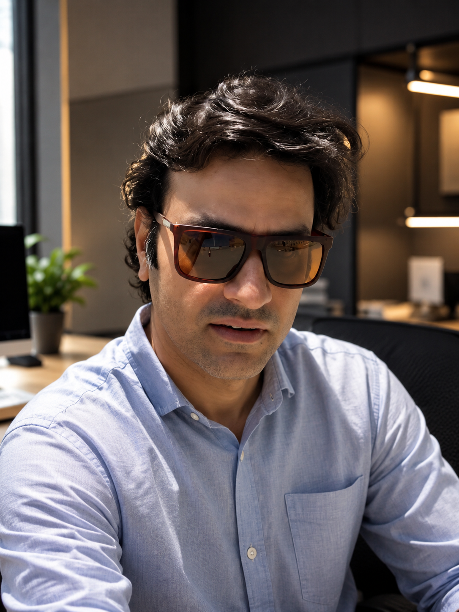

25 Years.
No Shortcuts.
I've spent 25 years starting and running businesses in different industries. Not every idea worked. Not every bet paid off. But every experience — the wins and the failures — taught me something that no course or degree ever could.
Today I work with startup founders who are in the thick of it — trying to figure things out, make the right calls, and build something that lasts. I've been exactly where they are. That's why I can help.
The Long Game
Starting from the ground up
I started as a merchandiser in the textile industry — learning how products move from factories to shelves across the world. It wasn't glamorous, but it taught me the fundamentals of supply chains, vendor relationships, and how real business actually works at ground level.
Building across borders
I built an apparel sourcing business from scratch — crossing borders, negotiating with factories across multiple countries, and securing deals with major retail chains in Europe. We hit $4M in sales by year two. That taught me how to build with limited resources and how global trade really operates beneath the surface.
Trading, retail, and hard lessons
I moved into new markets — trading in the Gulf region, building a fashion retail brand, managing operations, sales, and teams. Some things worked. Some didn't. I launched two retail outlets, scaled a men's clothing brand, and learned that growth without systems is just chaos with momentum.
Pivoting into digital media
I co-founded two regional media platforms covering Saudi Arabia and Qatar — learning audience building, content strategy, and digital operations from the ground up. Pivoting into a completely new industry at this stage wasn't comfortable. But that discomfort taught me more about adaptability than any decade before it.
Technology, AI, and helping founders
Today I run Nexosol, a technology venture, and work with startup founders as an advisor. The thread connecting all 25 years is simple: I believe in simple ideas, strong execution, and real impact. I help founders cut through the noise and build businesses that actually work.
What I Believe
Simple ideas win
Complexity is usually a sign of confusion. The best businesses I've seen — and built — are rooted in a clear, simple idea executed extremely well.
Execution is everything
I've seen brilliant ideas fail and average ideas succeed. The difference is always execution. Strategy without implementation is just a document.
Failure is data
Not every business I've built worked. I don't hide that. The failures taught me more than the successes — and that experience is exactly what I bring to the founders I work with.
Ready to talk?
Whether you're just starting out or trying to break through a ceiling — I've probably been there. Let's figure it out together.